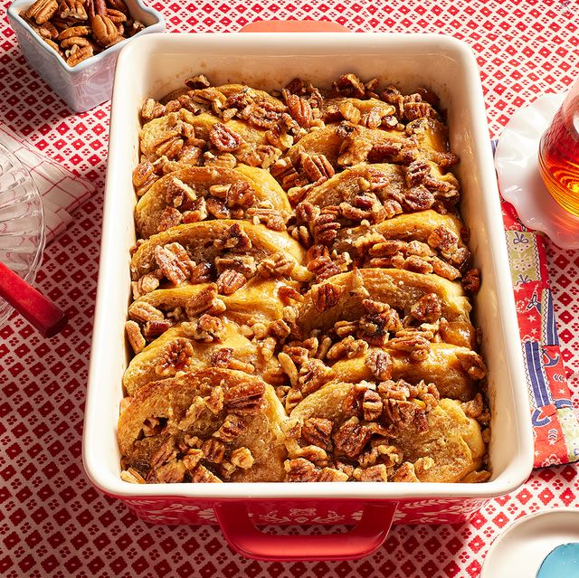

French Toast Casserole

Description
This French toast casserole combines all the ingredients of traditional French toast in an easy overnight method. No more slaving over a hot stove flipping pieces of French toast while your guest are waiting. Make this easy casserole the night before, pop it in the oven in the morning, and serve it for a casual weekend or holiday breakfast. I got the idea from a bed and breakfast in the south. You can add additional ingredients such as blueberries and cream cheese, cinnamon apples, nuts, and dried fruit!
Ingrediants
- Brown Sugar: Brown sugar, in the French toast and in the topping, adds warmth and sweetness.
- Butter: A stick of butter adds richness and flavor.
- Bread: Choose a sturdy loaf that can stand up to the thick sauce, such as crusty French bread. Some reviewers suggest using challah or sourdough.
- Eggs: Six whole eggs are key to the rich, custardy texture.
- Milk: Use whole or 2 percent milk.
- Vanilla: Two teaspoons of vanilla extract enhances the flavor and lends a touch of complexity.
- Cinnamon: A cinnamon-brown sugar mixture is sprinkled over the French toast casserole just before baking.
- Optional: Sprinkle powdered sugar over the finished casserole for a burst of sweetness.
Steps
- Make the French Toast: Cook the butter with a cup of brown sugar until the butter is melted and the sugar is dissolved, then pour the mixture into a prepared baking dish. Scatter the bread pieces over the butter mixture. Mix the milk, vanilla, and eggs together, then pour over the bread.
- Refridgerate: Cover the casserole and transfer to the fridge. Refrigerate at least 8 hours or up to overnight.
- Bake the Casserole: Remove the casserole from the fridge and uncover. Sprinkle with a mixture of brown sugar-cinnamon, then bake in the preheated oven until the casserole is browned and bubbling.